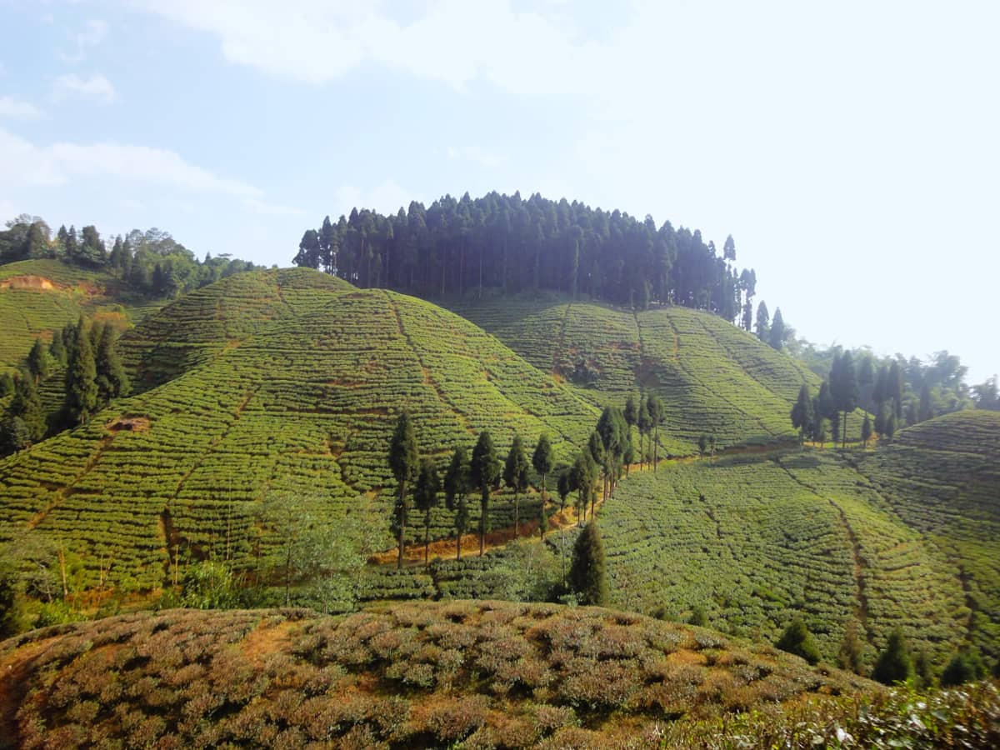
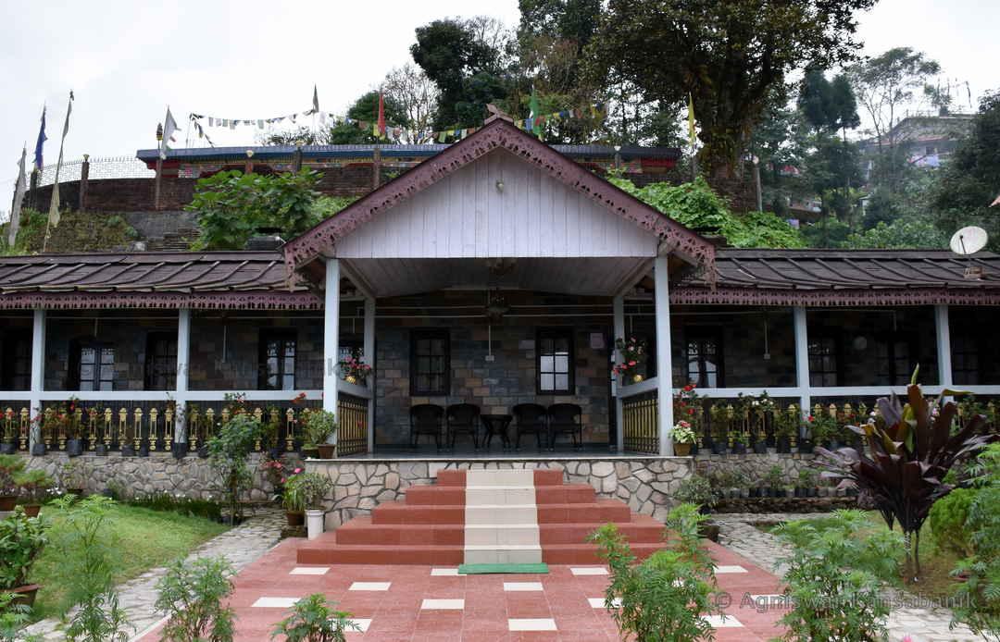

An old cantonment among tea bushes, between Darjeeling and the Teesta side
Takdah (also written Tukdah) sits below Darjeeling toward the Teesta valley. It began as a British cantonment and is now a scatter of tea gardens, orchids and restored bungalows. The air is milder than the town ridge. Walks pass through tea rows rather than a packed high street.
The orchid centre and nearby viewpoints are the usual short stops. Many travellers use Takdah as a quieter night on the way to Kalimpong or as a two-night tea-estate stay. October to May is the working window.

Clear air over the tea contours.
Cool, quiet bungalow nights.
New flush and orchid houses in bloom.
Rain on tin roofs and deep green bushes.



Tell us if you want bungalow stays or a simple halt between Darjeeling and Kalimpong.